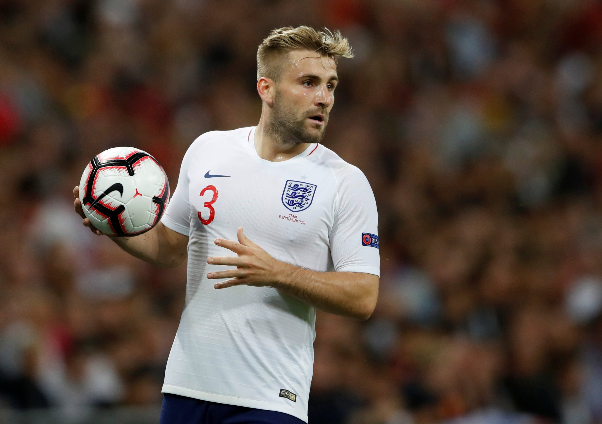

UTD LATEST 12pm Man Utd news
LIVE: Dembele 'determined' to join,
Greenwood to become 'complete forward',Martial to Inter Milan
LIVE BLOG
There was no major drama as Man Utd Swept aside Watford at Old Trafford on Sunday
Goals from Bruno Fernandes, Mason Greenwood and Anthony Martial was enough
to give the Red
Devils a deserved three points which kept their European charge on course.
Follow all the latest news and transfer updates from Old Trafford below...
NUMBERO UNO
Micah Richard reckons Bruno Fernandes has given the United dressing room a lift at Old Trafford.
Richards said on Match of the Day: “It's just confidence, when you've got a new player coming into the dressing room, you all know what he can do, the stats are all there to see.
“Sometimes that player just gives a bit of a lift.
“It's not arrogance, it's more confidence and it seems like it's rubbing off on the rest of the players as well.”
SHAW THING
Luke Shaw is targeting a place in this summer’s Euros after a return to form for Manchester United, reports Neil Custis.
The Red Devils full-back, 24, has been part of a team that has now enjoyed five clean sheets in the last six games.
Shaw said: “I'd be lying if I said I hadn't thought about it, but, you know, I've got to keep working hard, keep my head down and whatever happens happens.
“But, of course, it's everyone's dream to be involved in the Euros.
“I'm just going to keep my head down, keep working. At the end the day it's not down to me, it's of course down to Gareth and I'll respect whatever he decides.”
